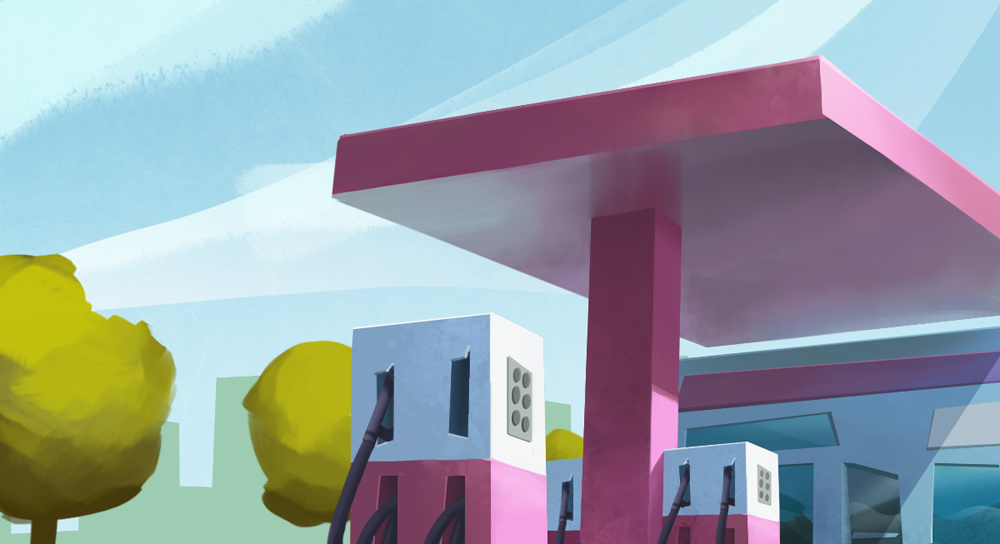

TriNa - "Mandarina Door"
Illustration for TV commercial
An illustration done for The Frank Barton Company for a new TriNa campaign. You can watch the clips in their website.
Bounce pitch
Illustrations for tv commercial
Some illustrations done in 2 days for The Frank Barton Company. They gave me the line art and I developed them to how they could look in the final spot.
Caïm Riba - Omplint de neu
Matte Painting for Music Video
I turned snowy some montains for the end shot of Caïm Riba"s "Omplint de Neu" music video. Work done for Glassworks Barcelona.
ONCE "Sorteo Extraordinario Día del Padre" (2)
Concept Art for commercial
Once more, I helped The Frank Barton Company with some concept art for ONCE"s lottery TV ad. In this one, a bunch of hats fly over the city and land on some selected ("lottery winners") people.
With a lot of information and references from Frank Barton (they always know very well what they want, which is really great), I started pencilling different views of the city. Then I made a full color version of some views, which they used as both color and lighting studies.
The full commercial was done in a rush -less than a month- so it is pretty neat what they achieved in such short time.
ONCE "Sorteo Extraordinario Día del Padre"
Concept Art for commercial
Commercial done by The Frank Barton Company for ONCE, about a magnifying glass looking for the lottery winner around a vintage city made of felt.
By working on grayscale concept art images, I helped Frank Barton to continue all their previous preproduction work and finish the design and layout of the city and the buildings, the composition and a basic lighting for almost all the shots of the commercial.
Here you can see a comparison between the concept art and the final render:
And this is the result, made by The Frank Barton Company:
They also put a very nice Making Of in their site, check it out!.
Commercial pitch
Development of an illustration for a tv spot pitch, for Passion Pictures
This was an image I did for Strange Beast in a whole weekend. The deadline was in 48 hours, so we had to stablish the composition and the elements very quick, after two conversations and two fast line sketches. Once the sketch on the right was approved, I did a rough color study based on the indications given by the director, who suggested a way pinker and brighter scheme, that gives the image a more appealing and technological feeling.
In order to get a clean look and sharp finish in the towers and key paths, I decided to build them as 3d models (using Modo) and bring a basic render to Photoshop, were I tweaked everything and did the final composition.
Cuevas Group website
Flash website frontend + backend programming. http://www.grupocuevas.com
This website was structured and programmed to be fully customizable by the user, who is able to edit sections and subsections, interactive backgrounds, news, contact data, links, downloadable files, multiple languages... Because of all this dynamic content and the transitions between sections (that produce an horizontal slide transition that changes everything), a new whole page is fully created from code each time the user changes to a new section.
The main challenges of this project were to maintain a good framerate in the transitions, to support the dynamic content, and to have a very responsive layout of the content on every window size.
Design: Jorge Fuentes - Coordination: Orge
Sergio Casas website
Programming & design. http://sergiocasas.net
This website features an administration that enables the user fully customization of his gallery. The video on the right shows a brief tour. The same system was used for my previous feiss.be website, and it was built on top of CodeIgniter (PHP)
Trenes for iOS
iOS Application for Spanish train times
iPhone/ iPod Touch application for querying spanish train timetables and stations. Available at the AppStore,
with over 90,000 users.
Check the official
website.
Scientific visualization
Rendering the activity of a neuron
These were some alternative illustrations trying to render an artistic perspective of real research data published on PNAS magazine. The authors asked me to use the raw data, which
consisted on a table with four different recordings of the electrical activity of a single
neuron, to produce an appealing and attractive image.
I used Houdini and Photoshop.